21. Gestión de accesos entre dominios
21.1. Arquitectura
Ahora vamos a examinar el problema de las solicitudes entre dominios. En el documento [Tutoriel AngularJS / Spring 4], se desarrolla una aplicación cliente/servidor en la que el cliente es una aplicación AngularJS:
 |
- las páginas HTML / CSS / JS de la aplicación Angular provienen del servidor [1];
- en [2], el servicio [dao] realiza una solicitud a otro servidor, el servidor [2]. Pues bien, eso está prohibido por el navegador que ejecuta la aplicación Angular porque supone un fallo de seguridad. La aplicación solo puede consultar al servidor del que proviene, es decir, el servidor [1];
De hecho, no es exacto decir que el navegador prohíbe a la aplicación Angular consultar el servidor [2]. En realidad, el navegador consulta al servidor [2] para saber si autoriza a un cliente que no proviene de su propio dominio a consultarlo. A esta técnica de intercambio se le denomina CORS (Cross-Origin Resource Sharing). El servidor [2] da su consentimiento enviando encabezados HTTP específicos.
Para mostrar los problemas que pueden surgir, vamos a crear una aplicación cliente/servidor en la que:
- el servidor será nuestro servidor web / jSON seguro;
- el cliente será una simple página HTML equipada con un código Javascript que realizará solicitudes al servidor web / jSON;
Vamos a implementar la siguiente arquitectura:
 |
- en [1], una aplicación web entrega páginas HTML / jS;
- en [2], el navegador ejecuta el Javascript integrado en las páginas HTML para consultar el servicio web seguro [3];
21.2. El proyecto [spring-cors-server-jdbc-generic]
21.2.1. Configuración del entorno de trabajo
 |
- cargue los proyectos anteriores. Los proyectos [spring-cors-*] se encontrarán en la carpeta [<exemples>\spring-database-generic\spring-cors];
- pulsa Alt-F5 y regenera todos los proyectos Maven;
A continuación, ejecute la configuración de ejecución denominada [spring-cors-server-jdbc-generic] (se deben iniciar SGBD y MySQL), que inicia un servicio web en el puerto 8081:
 |
Rellene la base [dbproduitscategories] con la configuración de ejecución denominada [spring-jdbc-generic-04-fillDataBase]:
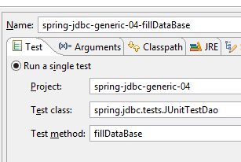 |
Ejecute la configuración de ejecución denominada [spring-cors-client-generic], que inicia una segunda aplicación web (en otro Tomcat) en el puerto 8082:
 |
Con un navegador, solicite el URL [http://localhost:8082/client.html]:
 |
- en [1], se solicita la versión corta version de todas las categorías;
- en [2], la respuesta jSON del servidor;
21.2.2. El proyecto del cliente [spring-cors-client-generic]
 |
 |
El archivo [application.properties] nos permite configurar el puerto de la aplicación web del cliente. Su contenido es el siguiente:
server.port=8082
Por lo tanto:
- el cliente es una aplicación web disponible en el URL [http://localhost:8082];
- el servidor es una aplicación web disponible en URL [http://localhost:8081];
Dado que el cliente no se obtiene desde el mismo puerto que el servidor, surge el problema de las solicitudes entre dominios. De hecho, [http://localhost:8081] y [http://localhost:8082] son dos dominios diferentes.
21.2.3. Configuración de Maven
El proyecto es un proyecto Maven con el siguiente archivo [pom.xml]:
<?xml version="1.0" encoding="UTF-8"?>
<project xmlns="http://maven.apache.org/POM/4.0.0" xmlns:xsi="http://www.w3.org/2001/XMLSchema-instance"
xsi:schemaLocation="http://maven.apache.org/POM/4.0.0 http://maven.apache.org/xsd/maven-4.0.0.xsd">
<modelVersion>4.0.0</modelVersion>
<groupId>dvp.spring.database</groupId>
<artifactId>spring-cors-client-generic</artifactId>
<version>0.0.1-SNAPSHOT</version>
<packaging>jar</packaging>
<name>spring-cors-client-generic</name>
<description>Client cors for webjson server</description>
<parent>
<groupId>org.springframework.boot</groupId>
<artifactId>spring-boot-starter-parent</artifactId>
<version>1.2.3.RELEASE</version>
<relativePath /> <!-- búsqueda del padre en el repositorio -->
</parent>
<properties>
<project.build.sourceEncoding>UTF-8</project.build.sourceEncoding>
<java.version>1.7</java.version>
</properties>
<dependencies>
<dependency>
<groupId>org.springframework.boot</groupId>
<artifactId>spring-boot-starter-web</artifactId>
</dependency>
</dependencies>
<!-- plugins -->
<build>
<plugins>
<plugin>
<groupId>org.springframework.boot</groupId>
<artifactId>spring-boot-maven-plugin</artifactId>
</plugin>
<plugin>
<artifactId>maven-assembly-plugin</artifactId>
<configuration>
<descriptorRefs>
<descriptorRef>jar-with-dependencies</descriptorRef>
</descriptorRefs>
</configuration>
</plugin>
<plugin>
<groupId>org.apache.maven.plugins</groupId>
<artifactId>maven-surefire-plugin</artifactId>
<version>2.18.1</version>
</plugin>
</plugins>
</build>
</project>
- líneas 14-19: se trata de un proyecto Spring Boot;
- líneas 27-30: se utiliza la dependencia [spring-boot-starter-web], que incluye un servidor Tomcat y Spring MVC;
21.2.4. Conceptos básicos de jQuery y Javascript
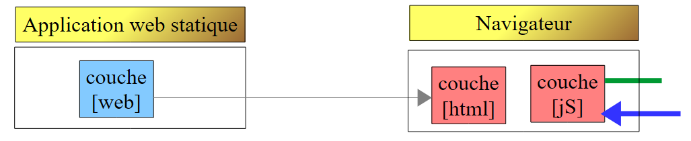 |
La aplicación web muestra la siguiente página única:
 |
Incluye código Javascript (jS) que se ejecuta en el navegador. A continuación, presentaremos algunos conceptos básicos de Javascript que nos permitirán comprender el código. El cliente realizará llamadas a HTTP utilizando la biblioteca jQuery [https://jquery.com/], que aporta numerosas funciones que facilitan el desarrollo Javascript. Creamos un archivo estático HTML [jQuery.html] que colocamos en la carpeta [static]:
 |
Este archivo tendrá el siguiente contenido:
<!DOCTYPE html>
<html xmlns="http://www.w3.org/1999/xhtml">
<head>
<meta http-equiv="Content-Type" content="text/html; charset=utf-8" />
<title>JQuery-01</title>
<script type="text/javascript" src="/js/jquery-2.1.3.min.js"></script>
</head>
<body>
<h3>Rudiments de JQuery</h3>
<div id="element1">
Elément 1
</div>
</body>
</html>
- línea 6: importación de jQuery;
- líneas 10-12: un elemento de la página de id [element1]. Vamos a jugar con este elemento.
Tenemos que descargar el archivo [jquery-2.1.3.min.js]. Lo encontraremos en el último version de jQuery al URL [http://jquery.com/download/]:

Colocaremos el archivo descargado en la carpeta [static / js]:
|
Una vez hecho esto, se solicita la vista estática [jQuery.html] con Chrome [1-2]:
 |
Con Google Chrome, ejecute [Ctrl-Maj-I] para que aparezcan las herramientas de desarrollo [3]. La pestaña [Console] [4] permite ejecutar código Javascript. A continuación, indicamos los comandos Javascript que hay que escribir y ofrecemos una explicación.
|
: genera la colección de todos los elementos de id [element1], por lo que normalmente una colección de 0 o 1 elemento, ya que no se pueden tener dos id idénticos en una página HTML. |  |
|
: asigna el texto [blabla] a todos los elementos de la colección. Esto tiene como efecto cambiar el contenido que muestra la página |  |
|
oculta los elementos de la colección. El texto [blabla] ya no se muestra. |  |
|
: vuelve a mostrar la colección. Esto nos permite ver que el elemento de id [element1] tiene el atributo CSS style='display : none;' que hace que el elemento quede oculto. | |
|
: muestra los elementos de la colección. El texto [blabla] vuelve a aparecer. Es el atributo CSS style='display: block;' el que garantiza esta visualización. |  |
|
: asigna un atributo a todos los elementos de la colección. El atributo es aquí [style] y su valor [color: red]. El texto [blabla] se vuelve rojo. |  |
 | |
 |
Cabe destacar que el URL del navegador no ha cambiado durante todas estas operaciones. No ha habido intercambio de datos con el servidor web. Todo ocurre dentro del navegador. Ahora, veamos el código fuente de la página:
<!DOCTYPE html>
<html xmlns="http://www.w3.org/1999/xhtml">
<head>
<meta http-equiv="Content-Type" content="text/html; charset=utf-8" />
<title>JQuery-01</title>
<script type="text/javascript" src="/js/jquery-1.11.1.min.js"></script>
</head>
<body>
<h3>Rudiments de JQuery</h3>
<div id="element1">
Elément 1
</div>
</body>
</html>
Este es el texto inicial. No refleja en absoluto las manipulaciones que hemos realizado en el elemento de las líneas 10-12. Es importante recordarlo cuando se realiza la depuración Javascript. Por lo tanto, a menudo es inútil visualizar el código fuente de la página mostrada.
21.2.5. El código jS de la aplicación
Volvamos al código HTML de la página de la aplicación cliente que va a consultar el servicio web / jSON:
|
<!DOCTYPE html>
<html>
<head>
<meta charset="UTF-8">
<title>Spring MVC</title>
<script type="text/javascript" src="/js/jquery-2.1.1.min.js"></script>
<script type="text/javascript" src="/js/client.js"></script>
</head>
<body>
<h2>Client du service web / jSON</h2>
<form id="formulaire">
<!-- método HTTP -->
Méthode HTTP :
<!-- -->
<input type="radio" id="get" name="method" value="get" checked="checked" />GET
<!-- -->
<input type="radio" id="post" name="method" value="post" />POST
<!-- URL -->
<br /> <br />URL cible : <input type="text" id="url" size="30"><br />
<!-- valor enviado -->
<br /> Chaîne jSON à poster : <input type="text" id="posted" size="50" />
<!-- botón de validación -->
<br /> <br /> <input type="submit" value="Valider" onclick="javascript:requestServer(); return false;"></input>
</form>
<hr />
<h2>Réponse du serveur</h2>
<div id="response"></div>
</body>
</html>
- línea 6: importamos la biblioteca jQuery;
- línea 7: se importa un código que vamos a escribir;
- líneas 11, 15, 17, 21: anotaremos los identificadores [id] de los componentes de la página. El javascript hace referencia a estos componentes a través de estos identificadores;
El código [client.js] es el siguiente:
// datos globales
var url;
var posted;
var response;
var method;
function requestServer() {
// se recupera la información del formulario
var urlValue = url.val();
var postedValue = posted.val();
method = document.forms[0].elements['method'].value;
// se realiza una llamada Ajax manualmente
if (method === "get") {
doGet(urlValue);
} else {
doPost(urlValue, postedValue);
}
}
function doGet(url) {
// se realiza una llamada Ajax manualmente
$.ajax({
headers : {
'Authorization' : 'Basic YWRtaW46YWRtaW4='
},
url : 'http://localhost:8081' + url,
type : 'GET',
dataType : 'tex/plain',
beforeSend : function() {
},
success : function(data) {
// resultado de texto
response.text(data);
},
complete : function() {
},
error : function(jqXHR) {
// error del sistema
response.text(jqXHR.responseText);
}
})
}
function doPost(url, posted) {
// se realiza una llamada Ajax manualmente
$.ajax({
headers : {
'Authorization' : 'Basic YWRtaW46YWRtaW4='
},
url : 'http://localhost:8081 ' + url,
type : 'POST',
contentType : 'application/json',
data : posted,
dataType : 'tex/plain',
beforeSend : function() {
},
success : function(data) {
// resultado de texto
response.text(data);
},
complete : function() {
},
error : function(jqXHR) {
// error del sistema
response.text(jqXHR.responseText);
}
})
}
// al cargar el documento
$(document).ready(function() {
// se recuperan las referencias de los componentes de la página
url = $("#url");
posted = $("#posted");
response = $("#response");
});
- líneas 71-75: del código jS ejecutado al finalizar la carga del documento en el navegador;
- líneas 73-75: se recuperan las referencias de tres de las zonas del documento HTML;
- líneas 2-5: variables globales conocidas en todas las funciones definidas en el archivo jS;
- línea 9: se recupera el URL introducido por el usuario;
- línea 10: se recupera el valor que quiere enviar;
- línea 11: se recupera la forma [get] o [post] que se utilizará para solicitar el URL de la línea 9:
- «document» designa el documento cargado por el navegador, lo que se denomina DOM (Document Object Model),
- document.forms[0] se refiere al primer formulario del documento, ya que un documento puede contener varios. En este caso, solo hay uno,
- document.forms[0].elements['method'] se refiere al elemento del formulario que tiene el atributo [name='method']. Hay dos:
<input type="radio" id="get" name="method" value="get" checked="checked" />GET
<input type="radio" id="post" name="method" value="post" />POST
- (continuación)
- document.forms[0].elements['method'].value es el valor que se va a enviar para el componente que tiene el atributo [name='method']. Sabemos que el valor enviado es el valor del atributo [value] del botón de radio marcado. En este caso, será una de las cadenas ['get', 'post'];
- líneas 13-18: según el método HTTP que se vaya a utilizar, se ejecuta el método [doGet] o [doPost];
- el método jQuery [$.ajax] realiza una llamada HTTP;
- líneas 23-25: se contacta con un servidor que requiere un encabezado HTTP [Authorization: Basic code]. Creamos este encabezado para el usuario [admin / admin], que es el único que puede consultar el servidor;
- línea 26: el usuario introducirá URL del tipo [/getAllLongCategories, /saveCategories, ...]. Por lo tanto, hay que completar estos URL;
- línea 27: método HTTP que se debe utilizar;
- línea 28: el servidor devuelve jSON. Se indica el tipo [text/plain] como tipo de resultado para mostrarlo tal y como se ha recibido;
- línea 33: visualización de la respuesta de texto del servidor;
- línea 39: visualización del posible mensaje de error en formato de texto;
- línea 44: el método [doPost] recibe un segundo parámetro que es el valor que se va a enviar;
- línea 52: para indicar que el valor enviado se hará en forma de cadena jSON;
21.2.6. Ejecución del cliente
La aplicación cliente es una aplicación de consola iniciada por la siguiente clase ejecutable [Client]:
 |
package spring.cors.client;
import org.springframework.boot.SpringApplication;
import org.springframework.boot.autoconfigure.EnableAutoConfiguration;
@EnableAutoConfiguration
public class Client {
public static void main(String[] args) {
SpringApplication.run(Client.class, args);
}
}
- línea 6: la anotación [@EnableAutoConfiguration] es una anotación del proyecto [Spring Boot] (línea 4). Spring Boot inspeccionará los archivos presentes en la ruta de clases del proyecto. En este caso, serán todas las dependencias de Maven aportadas por la única dependencia del archivo [pom.xml]:
<dependencies>
<dependency>
<groupId>org.springframework.boot</groupId>
<artifactId>spring-boot-starter-web</artifactId>
</dependency>
</dependencies>
Esta dependencia aporta numerosos archivos, en particular Spring MVC y un servidor Tomcat. Debido a la presencia de estas dependencias, Spring Boot configurará, con valores por defecto, un proyecto Spring MVC que se ejecuta en Tomcat. El servidor Tomcat queda entonces configurado para funcionar en el puerto 8080. Si queremos prescindir de los valores predeterminados elegidos por Spring Boot, podemos utilizar el archivo [application.properties] en la raíz del Classpath (todo lo que hay en [src / main / resources] se encuentra en la raíz del Classpath):
 |
Indicamos que el servidor Tomcat debe funcionar en el puerto 8082 de la siguiente manera:
server.port=8082
La lista de parámetros utilizables se encuentra en [application.properties], en URL (junio de 2015) y en [http://docs.spring.io/spring-boot/docs/current/reference/html/common-application-properties.html];
Volvamos al código de [Client.java]:
- línea 10: el método [SpringApplication.run] desplegará la página [client.html] en el servidor Tomcat presente en la ruta de clases del proyecto;
21.2.7. URL [/getAllShortCategories]
 |
Iniciamos:
- el servidor web / json seguro en el puerto 8081 (configuración [spring-security-server-jdbc-generic]);
- el cliente de este servidor en el puerto 8082 (configuración [spring-cors-client-generic]);
luego solicitamos el URL [http://localhost:8082/client.html] [1]:
 |
- En [2], estamos procesando un GET sobre el URL [http://localhost:8081/getAllShortCategories];
No obtenemos respuesta del servidor. Al consultar la consola de desarrollo de Chrome (Ctrl-Mayús-I), se detecta un error:
 |
- en [1], estamos en la pestaña [Network];
- en [2], vemos que la solicitud HTTP que se ha realizado no es [GET], sino [OPTIONS]. En el caso de una solicitud entre dominios, el navegador comprueba con el servidor que se cumplen una serie de condiciones enviándole una solicitud HTTP [OPTIONS]. En este caso, las solicitudes son las indicadas por los puntos [5-6];
- en [5], el navegador pregunta si se puede acceder al destino URL mediante un GET. La solicitud [Access-Control-Request-Method] solicita una respuesta con un encabezado HTTP [Access-Control-Allow-Methods] que indique que se acepta el método solicitado;
- en [6], el navegador envía el encabezado HTTP [Origin: http://localhost:8081]. Este encabezado solicita una respuesta en un encabezado HTTP [Access-Control-Allow-Origin] indicando que el origen especificado es aceptado;
- en [7], el navegador pregunta si se aceptan los encabezados HTTP, [accept] y [authorization]. La solicitud [Access-Control-Request-Headers] espera una respuesta con un encabezado HTTP [Access-Control-Allow-Headers] que indique que los encabezados solicitados son aceptados;
- se produce un error en [3]. Al hacer clic en el icono, aparece el error [4];
- en [4], el mensaje indica que el servidor no ha enviado el encabezado HTTP [Access-Control-Allow-Origin] que indica si se acepta el origen de la solicitud;
- en [8], se puede observar que el servidor efectivamente no ha enviado este encabezado. Por lo tanto, el navegador se ha negado a realizar la solicitud HTTP GET solicitada inicialmente;
Tenemos que modificar el servidor web / jSON.
21.2.8. Un nuevo servicio web / json
Creamos un nuevo proyecto Maven [spring-cors-server-jdbc-generic]:
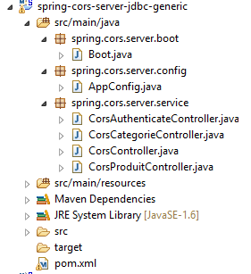 |
La configuración de Maven del nuevo servicio web es la siguiente:
<project xmlns="http://maven.apache.org/POM/4.0.0" xmlns:xsi="http://www.w3.org/2001/XMLSchema-instance"
xsi:schemaLocation="http://maven.apache.org/POM/4.0.0 http://maven.apache.org/xsd/maven-4.0.0.xsd">
<modelVersion>4.0.0</modelVersion>
<groupId>dvp.spring.database</groupId>
<artifactId>spring-cors-server-jdbc-generic</artifactId>
<version>0.0.1-SNAPSHOT</version>
<name>spring-cors-server-jdbc-generic</name>
<description>démo spring cors</description>
<parent>
<groupId>org.springframework.boot</groupId>
<artifactId>spring-boot-starter-parent</artifactId>
<version>1.2.3.RELEASE</version>
</parent>
<!-- complementos -->
<build>
<plugins>
<plugin>
<groupId>org.apache.maven.plugins</groupId>
<artifactId>maven-surefire-plugin</artifactId>
<version>2.18.1</version>
</plugin>
</plugins>
</build>
<dependencies>
<dependency>
<groupId>dvp.spring.database</groupId>
<artifactId>spring-security-server-jdbc-generic</artifactId>
<version>0.0.1-SNAPSHOT</version>
</dependency>
</dependencies>
</project>
- líneas 30-32: recuperamos todo el trabajo realizado hasta ahora basándonos en el archivo del servidor web / json seguro;
Al final, las dependencias son las siguientes:
 |
La clase de configuración [AppConfig] es la siguiente:
 |
package spring.cors.server.config;
import javax.annotation.PostConstruct;
import org.springframework.beans.factory.annotation.Autowired;
import org.springframework.context.annotation.Bean;
import org.springframework.context.annotation.ComponentScan;
import org.springframework.context.annotation.Configuration;
import org.springframework.context.annotation.Import;
import org.springframework.web.servlet.DispatcherServlet;
@Configuration
@ComponentScan(basePackages = { "spring.cors.server.service" })
@Import({ spring.security.config.AppConfig.class })
public class AppConfig {
// solicitudes entre dominios
@Bean
public boolean isCorsEnabled() {
return true;
}
...
}
- línea 12: la clase es una clase de configuración de Spring;
- línea 9: hay que buscar otros componentes Spring en el paquete [spring.cors.server.service];
- línea 14: se importan los beans del proyecto [spring-security-server-jdbc-generic];
- líneas 18-21: creamos un componente Spring denominado [isCorsEnabled] que indica si se aceptan o no los clients ajenos al dominio del servidor;
21.2.9. Los controladores
El nuevo servicio web tiene cuatro controladores:
 |
- [CorsCategorieController] gestiona los URL de procesamiento de categorías. Solo gestiona los encabezados CORS de los clients web. En caso contrario, delega el trabajo al controlador [CategorieController] de la dependencia [spring-webjson-server-jdbc-generic];
- [CorsProduitController] y [CorsAuthenticateController] hacen lo mismo delegando el trabajo a los controladores [ProduitController] de la dependencia [spring-webjson-server-jdbc-generic] y [AuthenticateController] de la dependencia[spring-security-server-jdbc-generic];
- [CorsController] sirve para factorizar lo que es común a los tres controladores anteriores;
21.2.9.1. El controlador [CorsController]
La clase [CorsController] es la siguiente:
package spring.cors.server.service;
import javax.servlet.http.HttpServletResponse;
import org.springframework.beans.factory.annotation.Autowired;
import org.springframework.stereotype.Component;
@Component
public class CorsController {
@Autowired
private boolean isCorsEnabled;
// envío de opciones al cliente
public void sendOptions(String origin, HttpServletResponse response) {
// ¿Cors permitido?
if (!isCorsEnabled || origin == null || !origin.startsWith("http://localhost")) {
return;
}
// se establece el encabezado CORS
response.addHeader("Access-Control-Allow-Origin", origin);
// se autorizan determinados encabezados
response.addHeader("Access-Control-Allow-Headers", "accept, authorization");
// se permite el GET
response.addHeader("Access-Control-Allow-Methods", "GET");
}
}
- línea 8: la clase [CorsController] es un controlador Spring;
- líneas 11-12: inyección del bean [isCorsEnabled] que indica si se deben gestionar o no los encabezados CORS;
- líneas 15-26: el método [sendOptions] se encarga de responder a los clients que envían encabezados CORS;
- líneas 17-19: si la aplicación está configurada para aceptar solicitudes entre dominios y si el emisor ha enviado el encabezado HTTP [Origin] y si este origen comienza por [http://localhost], entonces se aceptará la solicitud entre dominios; de lo contrario, se rechazará;
- línea 21: si el cliente está en el dominio [http://localhost:port], se envía el encabezado HTTP:
lo que significa que el servidor acepta el origen del cliente;
- líneas 22-25: hemos señalado dos encabezados HTTP específicos en la solicitud HTTP [OPTIONS]:
A los encabezados HTTP y [Access-Control-Request-X], el servidor responde con un encabezado HTTP y [Access-Control-Allow-X] en el que indica lo que está autorizado. Las líneas 22-25 se limitan a repetir la solicitud del cliente para indicar que ha sido aceptada;
21.2.9.2. El controlador [CorsCategorieController]
package spring.cors.server.service;
import java.util.List;
import javax.servlet.http.HttpServletRequest;
import javax.servlet.http.HttpServletResponse;
import org.springframework.beans.factory.annotation.Autowired;
import org.springframework.web.bind.annotation.RequestHeader;
import org.springframework.web.bind.annotation.RequestMapping;
import org.springframework.web.bind.annotation.RequestMethod;
import org.springframework.web.bind.annotation.RestController;
import spring.jdbc.entities.Categorie;
import spring.webjson.server.entities.CoreCategorie;
import spring.webjson.server.service.CategorieController;
import spring.webjson.server.service.Response;
@RestController
public class CorsCategorieController extends CorsController {
@Autowired
private CategorieController categorieController;
@RequestMapping(value = "/cors-getAllShortCategories", method = RequestMethod.OPTIONS)
public void corsGetAllShortCategories(@RequestHeader(value = "Origin", required = false) String origin,
HttpServletResponse response) {
sendOptions(origin, response);
}
@RequestMapping(value = "/cors-getAllShortCategories", method = RequestMethod.GET)
public Response<List<Categorie>> getAllShortCategories(
@RequestHeader(value = "Origin", required = false) String origin, HttpServletResponse response) {
// método de origen
return categorieController.getAllShortCategories();
}
...
}
- línea 19: la anotación [@RestController] convierte a la clase tanto en un componente Spring como en un controlador MVC que envía sus propias respuestas al cliente;
- línea 20: la clase [CorsCategorieController] extiende la clase [CorsController] que acabamos de ver;
- líneas 22-23: inyección del controlador [CategorieController categorieController] de la dependencia [spring-webjson-server-jdbc-generic];
- líneas 25-29: procesan URL [/cors-getAllShortCategories] cuando se solicita con el comando HTTP [OPTIONS]. Por convención, decidimos que las aplicaciones web clients que deseen llamar a URL [/U] del servicio web seguro deberán llamar, en realidad, aURL [/cors-U]. El servicio web implementado tendrá así dos tipos de URL:
- [/U]: para clients no web;
- [/cors-U]: para los clients web;
- línea 25: el método [/cors-getAllShortCategories] admite como parámetros:
- el objeto [@RequestHeader(value = "Origin", required = false)], que recuperará el encabezado HTTP [Origin] de la solicitud. Este encabezado ha sido enviado por el emisor de la solicitud:
Se indica que el encabezado HTTP [Origin] es opcional [required = false]. En este caso, si el encabezado no está presente, el parámetro [String origin] tendrá el valor nulo. Con [required = true], que es el valor por defecto, se lanza una excepción si el encabezado no está presente. Se ha querido evitar este caso;
- (continuación)
- el objeto [HttpServletResponse response] que se devolverá al cliente que ha realizado la solicitud;
Estos dos parámetros son inyectados por Spring;
- línea 28: se delega el procesamiento de la solicitud al método [sendOptions] de la clase padre [CorsController];
- líneas 31-36: el método [getAllShortCategories] procesa URL y [/cors-getAllShortCategories] cuando se le solicita con un GET;
- línea 35: la tarea se delega al método [CategorieController.getAllShortCategories] de la dependencia [spring-webjson-server-jdbc-generic];
Ahora estamos listos para nuevas pruebas. Lanzamos el nuevo version del servicio web y descubrimos que el problema persiste. No ha cambiado nada. Si en la línea 28 anterior colocamos una salida de consola, esta nunca se muestra, lo que indica que el método [corsGetAllShortCategories] de la línea 25 nunca se llama.
Tras investigar un poco, descubrimos que Spring MVC procesa por sí mismo los comandos HTTP y [OPTIONS] con un procesamiento por defecto. Por lo tanto, siempre es Spring quien responde y nunca el método [corsGetAllShortCategories] de la línea 25. Este comportamiento por defecto de Spring MVC se puede modificar. Modificamos la clase [AppConfig] existente:
|
package spring.cors.server.config;
import javax.annotation.PostConstruct;
import org.springframework.beans.factory.annotation.Autowired;
import org.springframework.context.annotation.Bean;
import org.springframework.context.annotation.ComponentScan;
import org.springframework.context.annotation.Configuration;
import org.springframework.context.annotation.Import;
import org.springframework.web.servlet.DispatcherServlet;
@Configuration
@ComponentScan(basePackages = { "spring.cors.server.service" })
@Import({ spring.security.config.AppConfig.class })
public class AppConfig {
// solicitudes entre dominios
@Bean
public boolean isCorsEnabled() {
return true;
}
@Autowired
private DispatcherServlet dispatcherServlet;
@PostConstruct
public void init(){
// la aplicación procesa las solicitudes por sí misma HTTP [OPTIONS]
dispatcherServlet.setDispatchOptionsRequest(true);
}
}
- líneas 23-24: se inyecta el componente [DispatcherServlet dispatcherServlet] que se ha definido en la dependencia [spring-webjson-server-jdbc-generic];
- líneas 26-30: la anotación [@PostConstruct] hace que el método [init] se ejecute tras la instanciación de la clase [AppConfig] y tras las inyecciones realizadas por Spring;
- línea 29: se solicita que el servlet reenvíe a la aplicación los comandos HTTP y [OPTIONS];
Repetimos las pruebas con esta nueva configuración. Obtenemos el siguiente resultado:
 |
- en [1], vemos que hay dos solicitudes HTTP hacia URL y [http://localhost:8080/getAllCategories];
- en [2], la solicitud [OPTIONS];
- en [3], los tres encabezados HTTP que acabamos de configurar en la respuesta del servidor;
Veamos ahora la segunda solicitud:
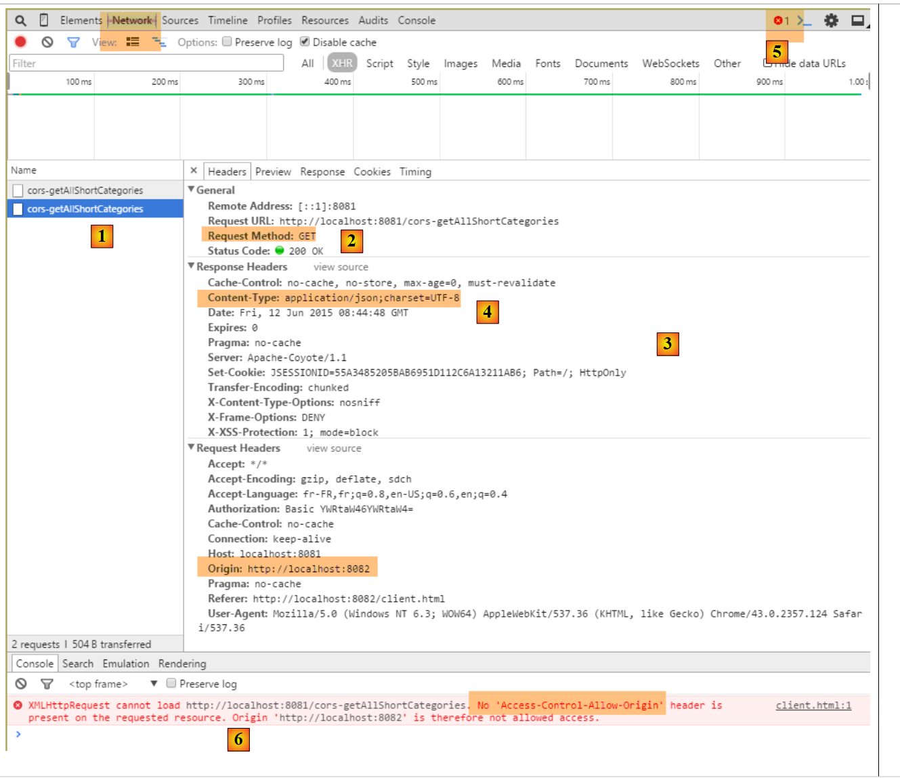 |
- en [1], la solicitud examinada;
- en [2], es la solicitud GET. Gracias a la primera solicitud [OPTIONS], el navegador ha recibido la información que solicitaba. Ahora realiza la solicitud [GET] solicitada inicialmente;
- en [3], la respuesta del servidor;
- en [4], el servidor envía jSON;
- en [5], se ha producido un error;
- en [6], el mensaje de error;
Es más difícil explicar lo que ha pasado aquí. La respuesta [3] del servidor es normal [HTTP/1.1 200 OK]. Por lo tanto, deberíamos tener el documento solicitado. Es posible que el servidor haya enviado correctamente el documento, pero que sea el navegador el que impida su uso porque quiere que, para la solicitud GET también, la respuesta incluya el encabezado HTTP [Access-Control-Allow-Origin:http://localhost:8081].
Modificamos el método que procesa GET de URL [/cors-getAllShortCategories]:
@RequestMapping(value = "/cors-getAllShortCategories", method = RequestMethod.GET)
public Response<List<Categorie>> getAllShortCategories(
@RequestHeader(value = "Origin", required = false) String origin, HttpServletResponse response) {
// encabezados CORS
sendOptions(origin, response);
// método de origen
return categorieController.getAllShortCategories();
}
- línea 5: al igual que en la solicitud HTTP [OPTIONS], el servidor enviará los encabezados HTTP CORS para una solicitud HTTP [GET];
Tras esta modificación, los resultados son los siguientes:
 |
Hemos obtenido correctamente el version corto de todas las categorías.
21.2.9.3. Los URL [GET]
En los controladores [CorsCategorieController, CorsProduitController, CorsAuthenticateController], el código de las acciones que procesan los URL solicitados con un [GET] sigue el modelo de las acciones que procesaron anteriormente el URL y el [/cors-getAllShortArticles]. El lector puede comprobar el código en los ejemplos que se incluyen con este documento. A continuación se muestra un ejemplo para el URL [/cors-getAllLongProduits] del controlador [CorsProduitController]:
package spring.cors.server.service;
import java.util.List;
import javax.servlet.http.HttpServletRequest;
import javax.servlet.http.HttpServletResponse;
import org.springframework.beans.factory.annotation.Autowired;
import org.springframework.web.bind.annotation.RequestHeader;
import org.springframework.web.bind.annotation.RequestMapping;
import org.springframework.web.bind.annotation.RequestMethod;
import org.springframework.web.bind.annotation.RestController;
import spring.jdbc.entities.Produit;
import spring.webjson.server.entities.CoreProduit;
import spring.webjson.server.service.ProduitController;
import spring.webjson.server.service.Response;
@RestController
public class CorsProduitController extends CorsController {
@Autowired
private ProduitController produitController;
@RequestMapping(value = "/cors-getAllLongProduits", method = RequestMethod.GET)
public Response<List<Produit>> getAllLongProduits(@RequestHeader(value = "Origin", required = false) String origin,HttpServletResponse response) {
// encabezados CORS
sendOptions(origin, response);
// método de origen
return produitController.getAllLongProduits();
}
@RequestMapping(value = "/cors-getAllLongProduits", method = RequestMethod.OPTIONS)
public void corsGetAllLongProduits(@RequestHeader(value = "Origin", required = false) String origin,
HttpServletResponse response) {
sendOptions(origin, response);
}
...
}
 |
21.2.9.4. Los URL [POST]
Analicemos el siguiente caso:
 |
- se realiza un POST [1] hacia el URL [2];
- en [3], el valor publicado. Se trata de la cadena jSON de una categoría sin productos;
- al final, lo que buscamos es crear una categoría llamada [categorie[2]];
Por el momento no modificamos ningún código. El resultado obtenido es el siguiente:
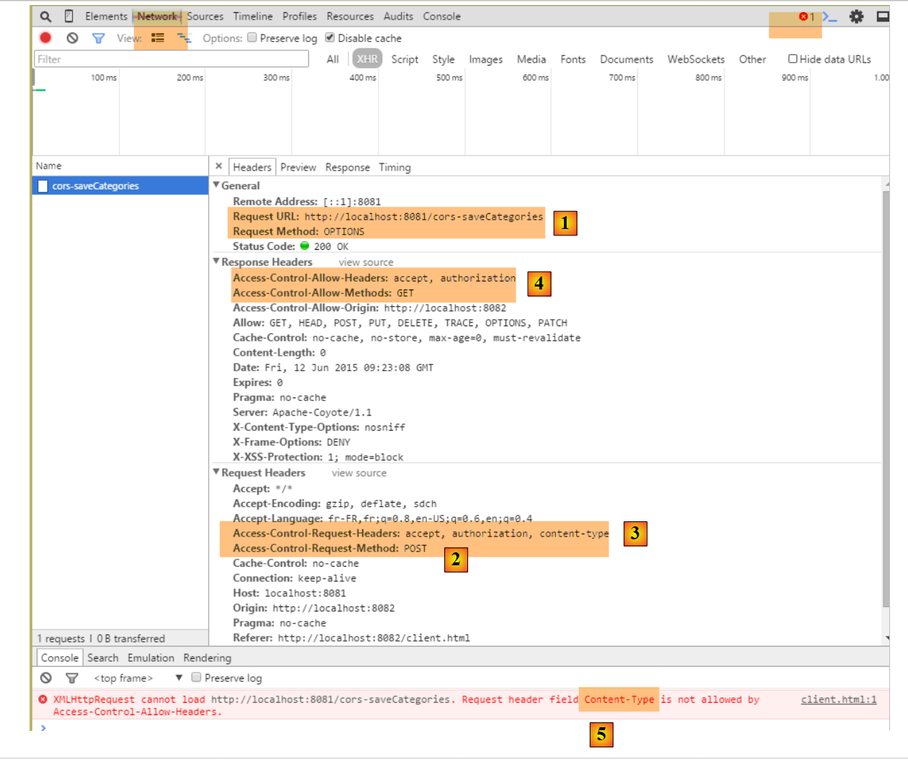 |
- en [1], al igual que con las solicitudes [GET], el navegador realiza una solicitud [OPTIONS];
- en [2], solicita autorización de acceso para una solicitud [POST]. Anteriormente era [GET];
- en [3], solicita autorización para enviar los encabezados HTTP y [accept, authorization, content-type]. Anteriormente, solo se tenían los dos primeros encabezados;
- en [4], el servicio web no concede todas las autorizaciones solicitadas, lo que provoca el error [5];
Modificamos el método [CorsController.sendOptions] de la siguiente manera:
public void sendOptions(String origin, HttpServletResponse response) {
// ¿Se permiten los cuerpos?
if (!isCorsEnabled || origin == null || !origin.startsWith("http://localhost")) {
return;
}
// se establece el encabezado CORS
response.addHeader("Access-Control-Allow-Origin", origin);
// se permiten determinados encabezados
response.addHeader("Access-Control-Allow-Headers", "accept, authorization, content-type");
// se permiten GET y POST
response.addHeader("Access-Control-Allow-Methods", "GET, POST");
}
}
- línea 9: se ha añadido el encabezado HTTP [Content-Type] (no importa si se escribe en mayúsculas o minúsculas);
- línea 11: se han añadido los métodos HTTP y [POST];
De este modo, los métodos [POST] se procesan de la misma manera que las solicitudes [GET]. A continuación se muestra un ejemplo de URL y [/cors-saveCategories] en el controlador [CorsCategorieController]:
@RequestMapping(value = "/cors-saveCategories", method = RequestMethod.POST, consumes = "application/json; charset=UTF-8")
public Response<List<CoreCategorie>> saveCategories(HttpServletRequest request,
@RequestHeader(value = "Origin", required = false) String origin, HttpServletResponse response) {
// encabezados CORS
sendOptions(origin, response);
// método de origen
return categorieController.saveCategories(request);
}
@RequestMapping(value = "/cors-saveCategories", method = RequestMethod.OPTIONS)
public void corsSaveCategories(@RequestHeader(value = "Origin", required = false) String origin,
HttpServletResponse response) {
sendOptions(origin, response);
}
Una vez realizadas estas modificaciones, el resultado obtenido es el siguiente:
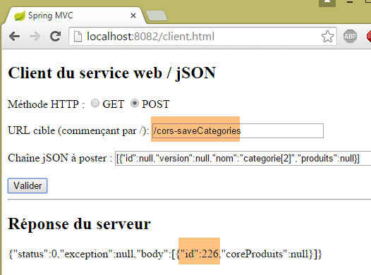 |
La categoría [categorie[2]] se ha añadido correctamente a la base de datos. El SGBD le ha asignado la clave primaria 226. Esto se puede comprobar con el método GET [/cors-getAllShortCategories]:
 |
21.2.10. Conclusión
Nuestra aplicación admite ahora las solicitudes entre dominios. Estas pueden autorizarse o no mediante la configuración en la clase [AppConfig]:
package spring.cors.server.config;
...
@Configuration
@ComponentScan(basePackages = { "spring.cors.server.service" })
@Import({ spring.security.config.AppConfig.class })
public class AppConfig {
// solicitudes entre dominios
@Bean
public boolean isCorsEnabled() {
return true;
}
...
}
21.3. El proyecto Eclipse [spring-cors-server-jpa-generic]
El servicio web CORS va a ser implementado ahora por el proyecto [spring-cors-server-jpa-generic], quebasa en el proyecto [spring-security-server-jpa-generic], que gestiona el acceso a la base de datos con Spring Data JPA:
 |
El proyecto [spring-cors-server-jpa-generic] se obtiene copiando el proyecto estudiado anteriormente, [spring-cors-server-jdbc-generic].
 |
A continuación hay que realizar dos modificaciones. La primera se encuentra en el archivo [pom.xml]:
<project xmlns="http://maven.apache.org/POM/4.0.0" xmlns:xsi="http://www.w3.org/2001/XMLSchema-instance"
xsi:schemaLocation="http://maven.apache.org/POM/4.0.0 http://maven.apache.org/xsd/maven-4.0.0.xsd">
<modelVersion>4.0.0</modelVersion>
<groupId>dvp.spring.database</groupId>
<artifactId>spring-cors-server-jpa-generic</artifactId>
<version>0.0.1-SNAPSHOT</version>
<name>spring-cors-server-jpa-generic</name>
<description>démo spring cors</description>
<parent>
<groupId>org.springframework.boot</groupId>
<artifactId>spring-boot-starter-parent</artifactId>
<version>1.2.3.RELEASE</version>
</parent>
<!-- complementos -->
<build>
<plugins>
<plugin>
<groupId>org.apache.maven.plugins</groupId>
<artifactId>maven-surefire-plugin</artifactId>
<version>2.18.1</version>
</plugin>
</plugins>
</build>
<dependencies>
<dependency>
<groupId>dvp.spring.database</groupId>
<artifactId>spring-security-server-jpa-generic</artifactId>
<version>0.0.1-SNAPSHOT</version>
</dependency>
</dependencies>
</project>
- líneas 30-32: la dependencia del servicio web seguro [spring-security-server-jpa-generic];
Al final, las dependencias del proyecto son las siguientes:
 |
Nota: pulsa Alt-F5 y, a continuación, regenera todos los proyectos
La segunda modificación consiste en actualizar las importaciones en las clases que señalan errores [Alt-Maj-O].
Eso es todo. Iniciamos el servicio web CORS con la configuración de ejecución [spring-cors-server-jpa-generic-hibernate-eclipselink]:
 |  |
A continuación, se inicia el cliente genérico:
 |
y, con un navegador, se solicita el URL [1] con un GET. En [2], se observa que el version, de las categorías devueltas, remite al campo [entityType], que no tenía en el version anterior JDBC.
Vamos a tratar otras dos arquitecturas CORS:
- arquitectura CORS / JPA EclipseLink / DB2;
- arquitectura CORS / JPA OpenJpa / Firebird;
21.4. Arquitectura CORS / JPA EclipseLink / DB2
Vamos a implementar la siguiente arquitectura:
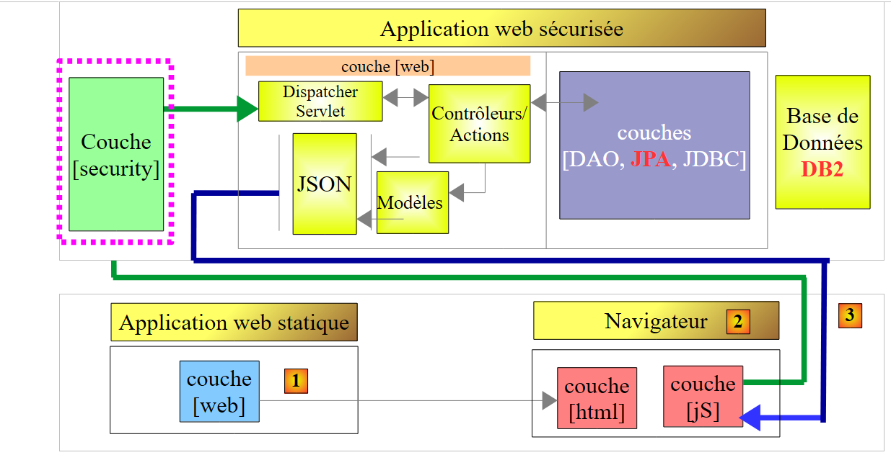 |
Cargamos los siguientes proyectos:
 |
Nota: pulsa Alt-F5 y regenera todos los proyectos Maven.
Ejecute SGBD DB2 y compruebe que la base de datos [dbproduitscategories] existe. De lo contrario, créela (apartado 12.1.2).
Se crean los usuarios en la base de datos [dbproduitscategories] con la configuración de ejecución [spring-security-create-users-hibernate-eclipselink]:
 |  |

A continuación, inicie el servicio web CORS con la configuración de ejecución denominada [spring-cors-server-jpa-generic-hibernate-eclipselink] y su cliente denominado [spring-cors-client-generic]:
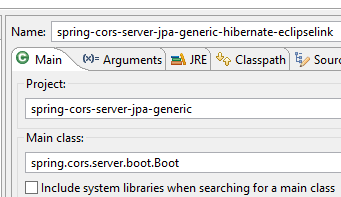 |  |
Rellene la base [dbproduitscategories] con valores utilizando la configuración de ejecución [spring-jdbc-generic-04-fillDataBase]:
 |
Por último, solicite en un navegador el siguiente URL:
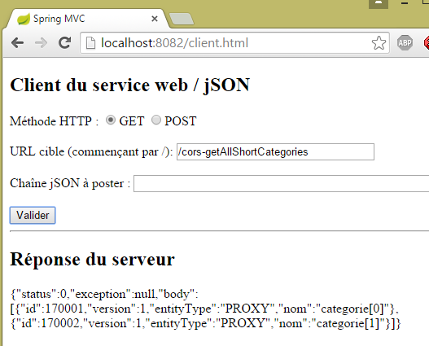 |
21.5. Arquitectura CORS / JPA OpenJPA / Firebird
Ahora vamos a implementar la siguiente arquitectura:
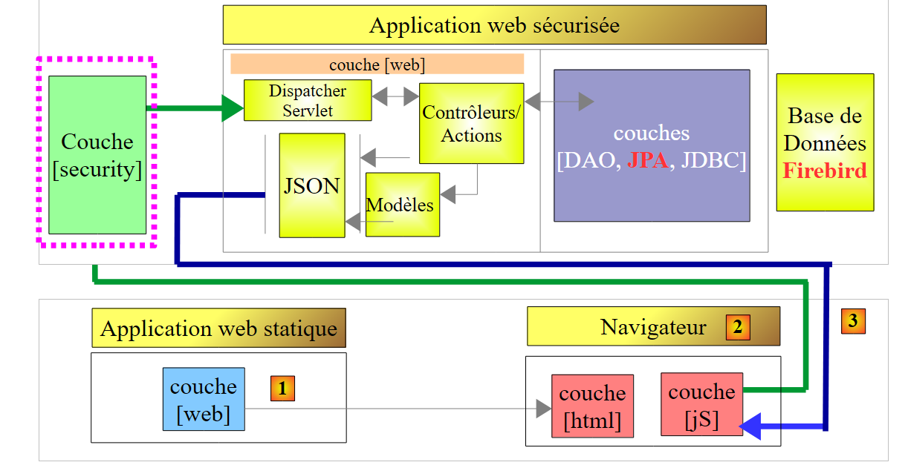 |
Cargamos los siguientes proyectos:
 |
Nota: pulsa Alt-F5 y regenera todos los proyectos Maven.
Inicie SGBD Firebird y compruebe que la base de datos [dbproduitscategories] existe. De lo contrario, créela (apartado 14.1.2).
Se crean los usuarios en la base de datos [dbproduitscategories] con la configuración de ejecución [spring-security-create-users-openjpa]:
 |  |

A continuación, inicie el servicio web CORS con la configuración de ejecución denominada [spring-cors-server-jpa-generic-openjpa]:
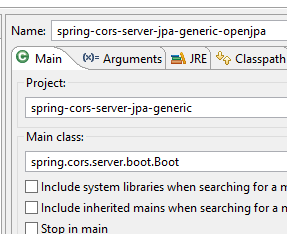 |  |
Inicie el cliente CORS con la configuración [spring-cors-client-generic]:
 |
Rellene la base [dbproduitscategories] con valores utilizando la configuración de ejecución [spring-jdbc-generic-04-fillDataBase]:
|
Por último, solicite en un navegador la siguiente URL:
 |